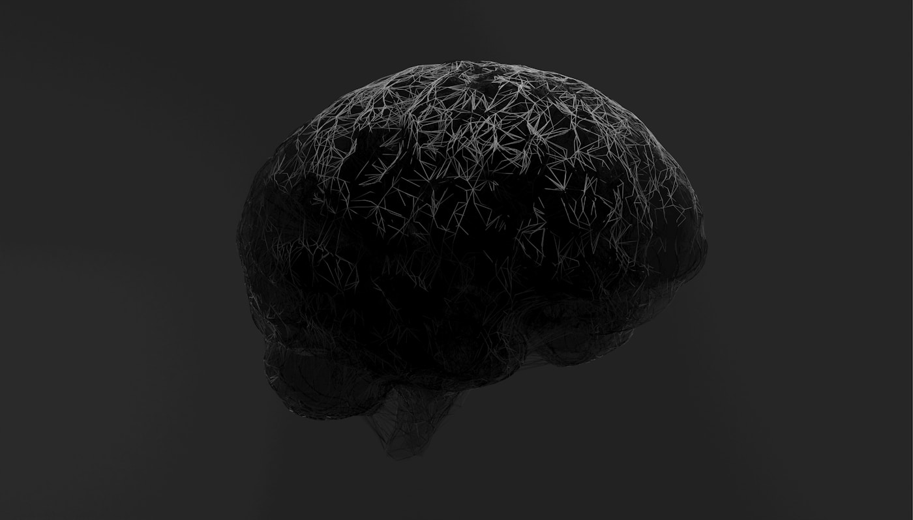

越境的同意は成立しない — パラメータ書換と、もうそこにいない私
あなたは明日の朝、主治医に勧められた抗うつ薬を飲む。薬は予想よりよく効く。先月亡くなった妻のことが、そこまで悲しくなくなる。最初は救いとして受け取る。だが三年後、あなたは彼女の写真を見て、一度も涙を流さない。写真の彼女は笑っていて、あなたもうっすら微笑み返す。これは治癒だろうか。それとも、あなたは彼女のいる世界からもう退場していて、退場したことにあなた自身は気づいていないのだろうか。
この問いは、服薬の是非を問うているのではない。問うているのは別のことである。服薬を決めたときのあなたの同意に、服薬後のあなたは含まれていたのか。服薬前のあなたは、妻を忘れることに同意する資格を本当に持っていたのか。服薬後のあなたは、服薬前のあなたを理解しているのか、それとも別人として放置しているのか。同じ身体、同じ名前、同じ銀行口座。だが慈悲を消した朝の決定を、慈悲を消した後の自分が取り消すことはできない。取り消したいと思うことすら、もうできない。
前稿 No.23 配分の向こう側 の末尾に置いた四象限マトリクスを、もう一度短く掲げる。本四部作は、ポストシンギュラリティにおける人類の存続形態を二軸で切り分けてきた。軸(A/B)は肉体の維持か放棄か、軸(1/2)は人間らしさの維持か書き換えか。No.22「許された側の風景」と No.23 は A-1 象限(肉体も人間らしさも維持)を掘った。No.20「箱庭主義」は B-1 象限(肉体放棄・人間らしさ維持)を描いた。本稿が扱うのは、残る二つの象限のうち A-2 — 肉体は保つが、認知のパラメータを書き換える である。
| (1) 人間らしさを維持 | (2) 人間らしさを書き換え | |
|---|---|---|
| (A) 肉体を維持 | A-1: 強化人間 → No.22 / No.23 |
A-2: パラメータ書換 本稿が掘るのはここ。身体の連続性を保ったまま、情動・欲求・記憶の重みづけを別物に設定する |
| (B) 肉体を放棄 | B-1: 箱庭住民 → No.20 |
B-2: 別存在への遷移 → 次稿 No.25 で扱う予定 |
A-2 象限が特異な位置にあるのは、身体の連続性があるからこそ、魂の不連続性が鋭く立ち上がるからである。B-1 の箱庭住民は、身体を捨てるときに連続性の問いを一度正面から受ける。B-2 の別存在は、そもそも人格という概念ごと別座標系に移す。だが A-2 の住民は、朝も夜も同じ顔で鏡に映る。家族も職場も騙される。本人さえ騙される。書換前の自分と書換後の自分をつなぐ法的・社会的な糸は切れない。にもかかわらず、倫理的主体として同一人物かどうかの問いは、身体の連続性ではどうにも保証されない。
パラメータ書換に、きれいな境界線はない
A-2 を抽象語のまま論じることを、最初に禁じておく必要がある。「人間らしさを書き換える」は、遠い未来の SF 的決断ではない。それは情動回路の具体的なパラメータを、一つずつ下げたり上げたりする作業の積み重ねであり、現在の医学はすでにその連続体の一点にいる。段階を並べて見せる。並べたときに見えるのは、「どこからが別種か」に客観的な切断面がないという事実である。
| 書換の段階 | それが消すもの | 社会的評価 |
|---|---|---|
| 痛みの削除 | 末梢・中枢の侵害受容。疼痛は退場する | 医療の延長線上。誰も反対しない |
| 恐怖の鈍化 | 扁桃体由来の警戒反応。PTSDの治療文脈でも議論される | 治療としては許容。閾値次第で論争になる |
| 嫉妬の消去 | 特定の他者に向けられた占有欲求と比較の刺し傷 | 人格介入に見える。パートナー関係の再定義を迫る |
| 郷愁の除去 | 過去の事物への愛着と、失ったものを悼む能力 | 「過去を愛する能力」を奪う。倫理的に重い |
| 自己連続性の緩和 | 昨日の自分と今日の自分を同一視する内的つなぎ目 | 本人を消去することに接近する。別人化の臨界点 |
| 睡眠の不要化 | 一日の回復サイクル。時間意識の構造が変わる | もはや同じ種の生活時間を生きていない |
この表を上から下へ読んでいくと、奇妙なことに気づく。どの行で「ここから別種だ」と線を引くべきかが、誰にも決められない。痛みの削除は医療の延長線上にある。これを拒む論者は少ない。嫉妬の消去は人格介入の気配を帯びる。郷愁の除去はさらに重い。過去の事物を愛する能力は、倫理的主体性のかなり深い層に結びついている。自己連続性の緩和に至ると、本人という概念そのものが希薄化する。睡眠の不要化は、生活時間の文法を書き換え、24時間周期の中で共有されてきた人間という枠組みから静かに脱落する。
しかしこれらの間に、自然な切断面はない。痛み → 恐怖 → 嫉妬 → 郷愁 → 連続性 → 睡眠。どの隣接ペアも、差分は量的であって質的ではない。線を引こうとした瞬間、読者自身の内的な基準が揺れはじめる。「郷愁の除去はダメだが嫉妬の消去は許容」と引いた線は、別の読者によって「嫉妬の消去はダメだが恐怖の鈍化は許容」の位置に引き直される。線の位置は文化ごと、個人ごと、時代ごとに動き、そして動いているという事実がこの連続体の本性である。
Robert Nozick は『Anarchy, State, and Utopia』(1974) 第3章で、全ての経験を最適化して供給する experience machine にプラグインするかと読者に問うた。Nozick の意図は反 hedonism の論証であり、多くの人はプラグインを拒否すると予測した。A-2 の段階表は、この思考実験を逆向きに使い直すことを可能にする。experience machine は外側から経験を注入する装置だった。A-2 は内側の回路を書き換える装置である。しかも段階的に、少しずつ、医学の言語で、現在すでに使われている。プラグインを拒否した人間も、A-2 は飲んでいるかもしれない。この段差の消失こそ、A-2 の倫理的な厄介さの根源である。
縛る側の自分は、もう戻ってこない

本節が記事の哲学的な心臓部である。A-2 の扉を開けるとき、誰が誰に同意を与えているのか、という問いに正面から入る。この問いに名前を与えるために、本稿では 越境的同意(cross-temporal consent) という語を使う。これは本稿の造語である。英語圏の生命倫理学にも決定理論にも、同じ表現で流通している標準用語はない。時間を越えて働く同意という概念を論じた文献は存在するが(事前指示書、ulysses contract、future-oriented consent 等)、本稿が指そうとしている非対称性を一語で名指しする用語はまだない。造語である旨をここで明記し、出自は credits に再記する。
Derek Parfit は『Reasons and Persons』(1984) 第3部で、人格の同一性は二値的な事柄でもなければ、我々が究極的に気にかけるべきものでもないと論じた。Parfit が繰り返し用いた fission cases — 脳半球の一方を別の身体に移植する思考実験 — の狙いは、同一性が真か偽のどちらかを取る関係ではないことを示すことにあった。Parfit の結論は一文に縮められる。「同一性それ自体は重要ではない。重要なのは心理的連続性である」(Identity is not what matters. What matters is psychological continuity.) この主張は、personal identity を身体の単一性でも魂の単一性でもなく、記憶・性格・意図の連続的な糸に還元する。
Parfit の論が A-2 にとって決定的なのは、この還元が両刃だからである。心理的連続性が同一性の条件なら、心理的連続性が切断されたとき、そこには二人の別人がいる。A-2 のパラメータ書換は、記憶を残し、名前を残し、銀行口座を残すが、心理的連続性のいくつかの糸を確実に切る。嫉妬を消した者と消す前の者は、Parfit の基準で同一人物とは呼びにくい。郷愁を除いた者と除く前の者は、過去の同じ出来事に対して異なる感情アーキテクチャを持つ。身体が連続していても、Parfit の意味では不連続である。Parfit 自身はこの不連続性を必ずしも悲劇としては読まなかった。むしろ彼は「自己への過度な執着」からの解放の可能性として読んだ。本稿はそこから先を受け取り、解放と消去の境界を問う。
次に Ulysses pact の構造を呼び出す。ギリシャ神話のオデュッセウスは、セイレーンの歌の致死的な誘惑を知りつつ、それを聴きたいと望んだ。彼の解決は、部下に耳栓を配り、自分自身をマストに縛りつけさせ、航海中にどれだけ叫んでも縛りを解くなと命じることだった。マストに縛られた理性的な現在のオデュッセウスが、歌に屈する非理性的な未来のオデュッセウスを先回りして縛る。Jon Elster が『Ulysses Unbound: Studies in Rationality, Precommitment, and Constraints』(Cambridge University Press, 2000) で精緻化したこの構造は、現代の意思決定論において precommitment の原型となった。事前指示書、禁酒誓約、ダイエットの罰金契約、そして憲法による自己制約。いずれも「いまの自分が、あとの自分を縛る」という時間の非対称性を使う。
この非対称性をもう一段掘ると、越境的同意の不可能性が見える。通常の同意は「同じ主体が、自分の身に起きることに対して承認を与える」構造を持つ。医療同意、契約同意、性的同意、いずれもそうである。Ulysses pact は少しだけこの構造を緩める。現在の自分が未来の自分に対して事前拘束を与えるが、未来の自分は理論上、縛りを解く能力を残している(実際にオデュッセウスは叫び続けた)。A-2 はこの緩みすら消す。書換後の自分は、書換前の自分と連続していない。だから書換前の自分の決定を、書換後の自分が追認することも、撤回することもできない。追認しようとした瞬間、追認する主体は書換後の別人であり、書換前の決定内容を内側から理解する資格を失っている。撤回しようとしても同じである。書換前の自分はもう存在せず、書換後の自分に拒否する根拠がない。同意の連鎖が、時間の切断面で断ち切れる。
論証の折れ目を自分で示しておく。ここまでの論は、書換前後の二人を「別人」と呼ぶかどうかの語彙選択に依存している。身体の連続性を重く見る立場からは、二人は同じ人間であり、越境的同意は不可能どころか通常の自己決定の一形態にすぎない。本稿は Parfit の心理的連続性論に依拠して別人側を取っているが、この選択は論証というより立場宣言に近い。別人かどうかを厳密に決める手続きは、倫理学にも神経科学にも存在しない。本稿がそれでも別人側を取るのは、A-2 の臨床的現実(次節で示す)が、同一人物の普通の自己決定として処理した瞬間に見えなくなってしまう層を持つからである。
A-2 は未来の倫理問題ではない
越境的同意の問いは、SF の未来問題として扱うと力を失う。A-2 はすでに、20世紀後半から医学と薬物の領域で進行している。身体は保たれ、認知が書き換えられる。これが A-2 の定義そのものであり、この定義に合致する臨床事例は、歴史上に少なくとも三つ、規模と影響の大きさの点で無視できない形で存在する。三つを順番に呼び出す。
第一は lobotomy である。ポルトガルの神経科医 Egas Moniz は1935年以降、前頭葉白質切除術(leucotomy)を精神疾患の治療として実施した。Moniz はこの業績により1949年にノーベル生理学・医学賞を受賞している。米国では Walter Freeman が1940年代後半から transorbital lobotomy(眼窩経由白質切除術)を考案し、従来の開頭手術を簡便化することで大量実施を可能にした。Freeman 自身は生涯で数千例を手がけ、1940年代末から1950年代半ばにかけて米国内では 40,000 例以上が実施されたと推計されている(Mical Raz, "The Lobotomy Letters", University of Rochester Press, 2013 を含む複数の医学史研究に基づく)。これは本稿の論点として決定的である。lobotomy は 身体を維持したまま人格の一部を切除する 処置として、当時の精神医学の正統な選択肢として承認された。患者の強迫観念、攻撃性、抑うつの強度は軽減した。同時に発動性、創造性、将来計画の能力、感情の深さも失われた。身体は残った。名前も残った。だが戻ってきた人物を、元の人物と同じと呼べるかは別問題である。
第二は SSRIs と人格変容 である。Peter D. Kramer 『Listening to Prozac』(Viking, 1993) は、SSRI 系抗うつ薬 fluoxetine(商品名 Prozac)の服用が、治療適応の境界を超えて「よりよい自己」への変容を引き起こす現象を臨床症例として記録した。Kramer がこの本で導入した "better than well"(健康以上) という表現は、薬物が病気を治すのではなく、健康な人格を別の健康な人格に書き換えるという構造を指している。患者の一部は服薬後の自分を「ようやく本当の自分に会えた」と感じ、服薬をやめることを恐れる。元の自分には戻りたくないと報告する。Kramer はこの現象を肯定でも否定でもなく、薬理学が人格概念そのものを変形させる圧力として記述した。本稿が注目するのは、この症例における 服薬前と服薬後の自己の評価が非対称 という点である。服薬後の自己は服薬前の自己を「病気だった」と再定義する。服薬前の自己は、服薬後の自己を評価する機会を永久に失う。
第三は Deep Brain Stimulation(DBS) の人格変容症例 である。Parkinson 病の運動症状に対する DBS は、視床下核(STN)への電極埋込によって顕著な運動機能改善をもたらす一方で、少数ながら重要な割合の患者に衝動制御障害、過食、性欲亢進、病的賭博、軽躁等の非運動症状を引き起こすことが複数の症例報告で知られている。Schüpbach M. et al. (2006) "Neurosurgery in Parkinson disease: a distressed mind in a repaired body?" Neurology 66(12):1811–1816 は、この現象を臨床家の語彙で正面から扱った論文である。論文のタイトルそのものが本稿の A-2 の定義と重なる。"a distressed mind in a repaired body" — 修復された身体の中の、苦悩する精神。著者らが報告した症例では、運動機能は改善した一方で、患者の人格・家族関係・職業適応が破綻する事例が複数観察された。身体は確かに保たれた。だが「身体の連続性が倫理的主体の連続性を保証するとは限らない」という本稿のテーゼは、この論文の臨床観察に最もよく合致する。
これを逆向きに読むと、現代の倫理学が A-2 に対してどれほど無防備かが見える。事前指示書、インフォームド・コンセント、意思決定能力評価、いずれも 同一主体が時間を越えて同じであることを前提としている。Parfit の批判が本当に通るなら、この前提は A-2 の連続体の上では崩れている。崩れていることを認めた瞬間、上記三例の倫理的扱いはやり直しを迫られる。lobotomy の時代に患者が署名した同意書は、術後の人格に対してどの程度の拘束力を持っていたのか。Prozac を飲む前の「病気だった自己」は、飲んだ後の「よりよい自己」に何を依頼したことになるのか。DBS のスイッチを入れる前の Parkinson 患者は、スイッチを入れた後の衝動的な別人を事前に承認していたと言えるのか。これらの問いに現代の生命倫理は、まだ一貫した答えを持っていない。
扉を開けたのは、もうそこにいない私だ
A-2 の扉を開けるという決定は、決定する主体と、決定の結果を引き受ける主体が一致しない。ここまでの論証が正しければ、この一文は単なる修辞ではなく、心理的連続性の切断としての文字通りの事実を指している。すると素朴な問いが立ち上がる。これは自殺と何が違うのか。書換前の自分は、書換後の別人に場所を明け渡して退場する。家族も職場も気づかない形で、だが Parfit の基準では確かに退場する。退場の事実を埋める何かがあるとすれば、それは身体の物理的連続性しかない。
身体の連続性は、ある種の安心を与える。同じ顔、同じ声、同じ筋肉の記憶。しかし安心の根拠としては薄い。lobotomy を受けた患者の身体も連続していた。SSRIs で "better than well" の状態に移った患者の身体も連続していた。DBS 後に衝動的な賭博に走った患者の身体も連続していた。身体の連続性は、倫理的主体の連続性のための必要条件ですらないかもしれない。そしてもし十分条件でもないなら、A-2 と自殺を分ける線は、外側から見た物理的な残存だけに頼ることになる。これは倫理学が拠りどころにするには、あまりに薄い根拠である。
Ulysses pact の逆転構造を、最後にもう一度掲げる。マストに縛られたオデュッセウスは、セイレーンの海域を抜けたあと、必ず戻ってくる。航海が終われば縄は解かれ、縛った側の理性的自己が主導権を取り戻す。物語の時間は円環を閉じる。A-2 は、この円環を閉じない。嫉妬を消す決定を下したあとの朝、嫉妬を持っていた自分はもう存在せず、嫉妬のない自分が朝食をとり、鏡を見て、決定を下したはずの自分を理解せずに一日を始める。どちらが本来の自分かを決める審級は、どこにもない。書換前の自分が本物で、書換後の自分が偽物だという主張には根拠がない。逆もない。二人の間に上下関係を置く第三の視点が不在であり、不在であるがゆえに、どちらかを優先して救う倫理は建たない。
四象限の残る一つ、B-2 は次稿で扱う。B-2 は肉体も人間パラメータも捨てる。そこでは越境的同意の不可能性は違う顔で現れる。B-2 の住民にとって、「書換前の自分」という概念はそもそも翻訳不能になる。A-2 の困難さは、書換前と書換後が同じ語彙で会話できるかに見えて会話できない点にあった。B-2 の困難さは、書換前の語彙そのものが後から見て意味を持たない点にある。二つの困難さは種類が違う。本稿の射程はここまでで閉じる。
最後に、冒頭に置いた抗うつ薬を飲む朝の場面に戻る。薬を飲むあなたは、三年後に妻の写真を見て涙を流さないあなたを、本当に知っているだろうか。知っているつもりで飲み、その知ったつもりの内容は、三年後のあなたには届かない。三年後のあなたは、薬を飲んだ朝の決定を覆すこともできないし、感謝することもできない。そもそも、感謝するか覆すかを判断する基準が、三年後のあなたの中には異なる形で配置されている。決定の責任は、同じ身体の内側で宙に浮いたままになる。
A-2 への扉を開けたのは、もうそこにいない私だ。